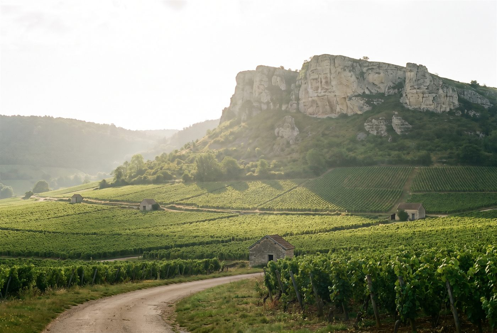

Les domaines · Mâconnais · Vergisson
22
Vergisson, Pouilly-Fuissé · Mâconnais
Domaine Eric Forest
Des Pouilly-Fuissé riches et salins, où la minéralité de la roche tient tête à la maturité.

Ambiance de Vergisson
Huitième génération d'une famille de vignerons de Vergisson, Eric Forest conduit le domaine depuis 1999 sur des parcelles plantées entre 1930 et 1979, au pied de la roche de Vergisson. Le travail est entièrement manuel, la vigne est labourée et menée sans herbicide, et les vins sont élevés dix à quinze mois en fût avec peu de soufre, puis mis en bouteille par gravité, souvent sans filtration.
Blancs
- Cépage · ChardonnayÉboulis calcaires et marnes exposés plein sud, un vin ample à la minéralité ciselée.
- Cépage · ChardonnayVignes à 401 m d'altitude sur roche bajocienne fissurée, minéralité saline et citronnée.
- Cépage · ChardonnayAssemblage de quatre terroirs frais cultivés par trois générations de la famille.
- Cépage · ChardonnayMicro-cuvée des trois ou quatre meilleurs fûts de La Roche et des Crays, produite seulement dans les grands millésimes.
- Cépage · ChardonnayVignes centenaires sur argiles sombres à Davayé, un vin très concentré.
- Cépage · ChardonnayCoteau pentu et calcaire chaud, profil plein et rond.
- Cépage · ChardonnayArgiles ferrugineuses sur calcaire, exposition nord-est, un vin frais et minéral.
- Cépage · ChardonnayMonopole de vignes centenaires sur argilo-marneux exposé sud.
Ces cuvées vous parlent ?
Demander les disponibilités